HAM FAIR 2003

2003年 アマチュア無線フェスティバル in 東京有明
|
◎ Ham Fair 2003開催 「ハムフェア2003」が8月23日(土)、24日(日)の両日、東京有明の東京ビッグサイトで開催された。 横浜の"パシフィコ横浜"から東京・有明に戻ったハムフェアもすっかり定着した。 昨年から開催日程が週末の土、日曜日の2日間に短縮されたため"短期集中型"となった初日の土曜日は大変な混雑だった。 JARLの発表によると2日間の来場者はのべ28,000人(23日=17,000人、24日=11,000人)だった。 |
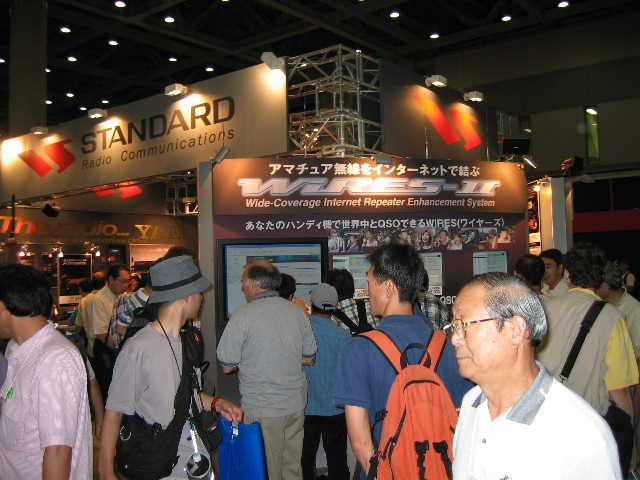
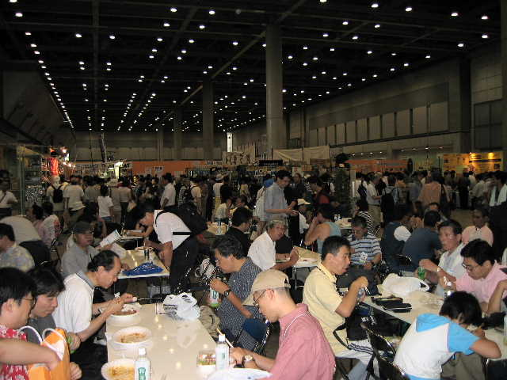
混雑した初日(23日)の会場/休憩所も満杯
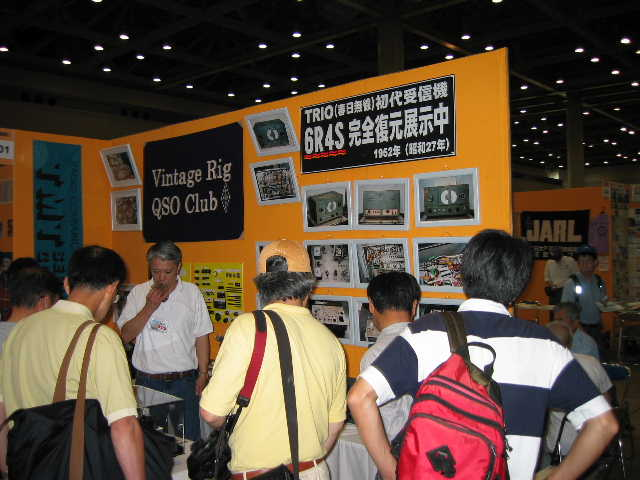
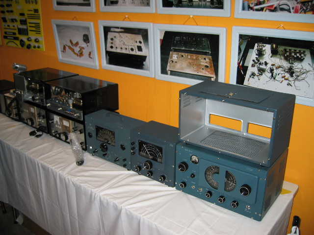
新品同様に復元されたTRIOの受信機 6R4Sなど、昔懐かしい"ビンテージ・リグ"に注目が集まった。
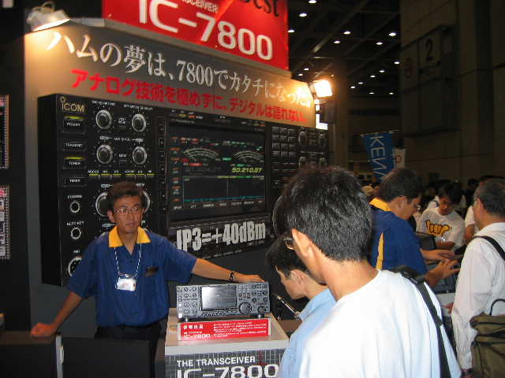
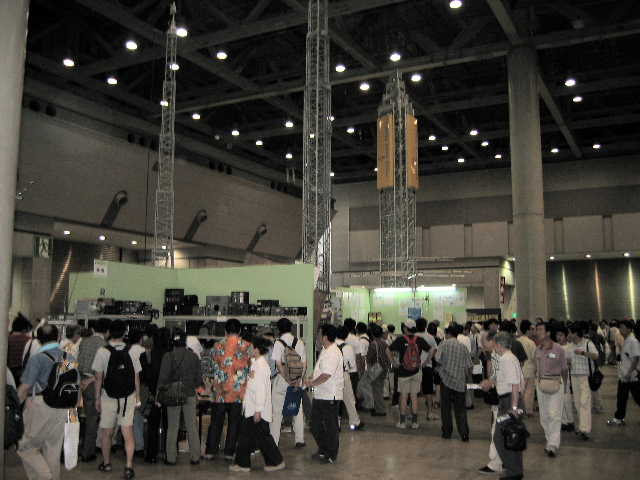
価格が気になる！注目のI-COMの新開発機種IC-7800/FTI & Lusoのブース
|
(株)スタンダードのブースでは今年も"インターネットを利用した新しいアマチュア無線"WIRES(ワイアーズ)のデモンストレーションを展開していた。 隣では「TEAM TAKANO 地球大航海プロジェクト2003」と題した、 東京ビッグサイトと八丈島間往復の水上バイク24時間耐久走のデモの実況が注目を集めていた。 |
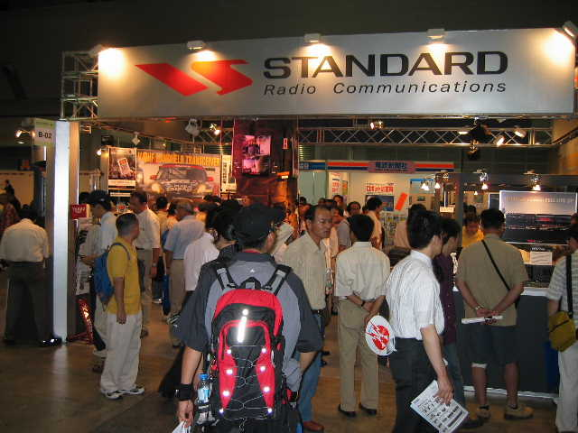
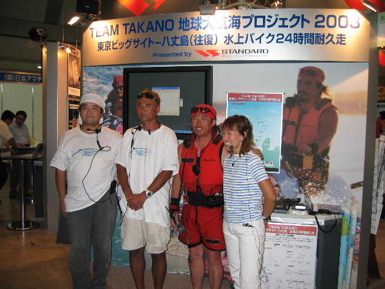
盛りだくさんの催しもので賑わっていた(株)スタンダードのブース
8N1HAM
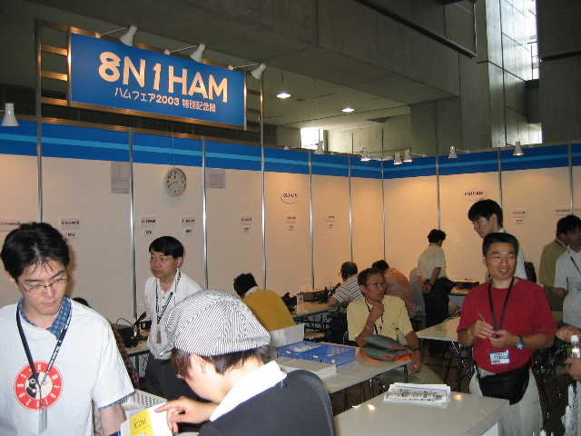
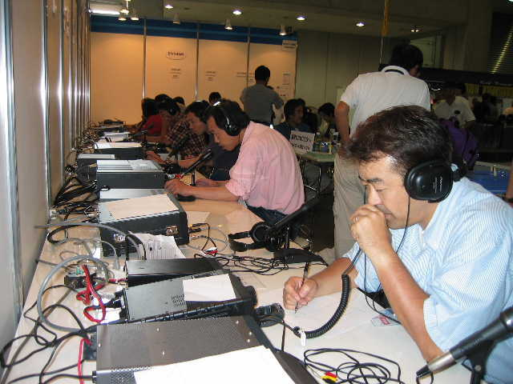
ハムフェア記念局・8N1HAMは連日フル稼働！
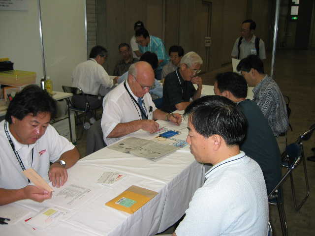
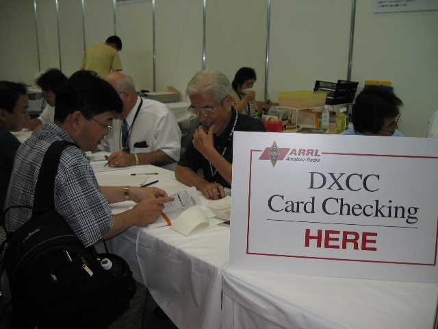
ハムフェア会場で行なわれたDXCCフィールドチェック
|
恒例となっているDXCCのフィールドチェックは今年も行なわれたが、
今回はARRLからMembership Service Department ManagerのN7NG・ウエイン・ミルズ氏が来日、
JARLのフィールドチェッカーを補佐した。
◎JARL事務局でもDXCCフィールドチェック |
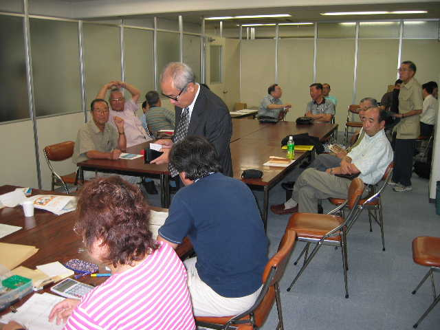
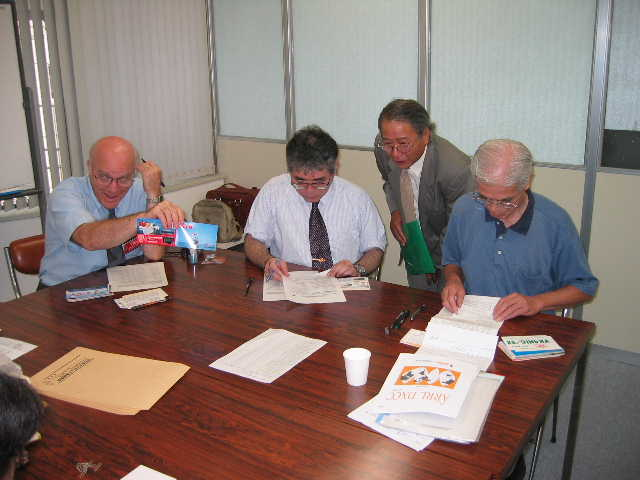
22日にJARL事務局で行なわれたDXCCフィールドチェックの模様/左端はN7NG、右端・海老沢の両氏

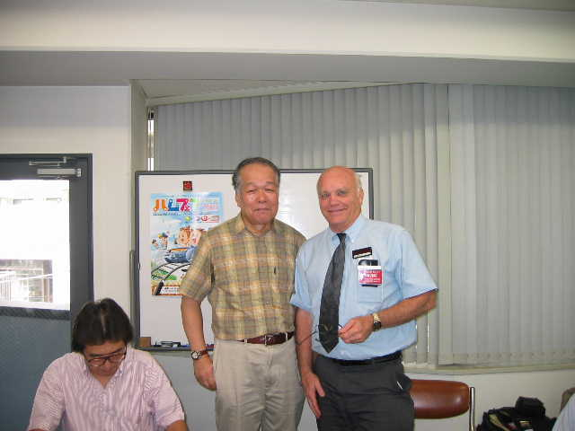
フィールドチェックに来日したN7NG・ウエイン・ミルズ氏/"第3次BS7H仲間"のJA1RJUとN7NG
Ham Fair Album 2003
Ham Fair 2004
Ham Fair 2003
Ham Fair 2002
Ham Fair 2001
Ham Fair 2000
Ham Fair 1999
|
[ハムフェアの歴史] ハム・フェアの前身「第1回全日本ハムベンション」が1975年(昭和50年)、静岡県富士宮市で開催された。 会場は富士の裾野に広がる朝霧高原のグリンパーク。 1976年の第2回では特別記念局の8J2HAMも開局、交通の便は良くないものの自然を満喫出来る会場は多くの来場者で賑わった。 この実績を基礎に、1977年(昭和52年)「全日本ハムベンション」を引き継ぐ形で「第1回アマチュア無線フェスティバル」(ハムフェア)が、 JARLの主催で東京都中央区晴海の東京貿易センターで開催される事になった。 第1回は9月23日から25日までの開催期間にも関わらず、初日から多くの入場者がつめかけた。 フェスティバルの特別記念局・8J1HAMも開設、多くの来場者が運用した。 |